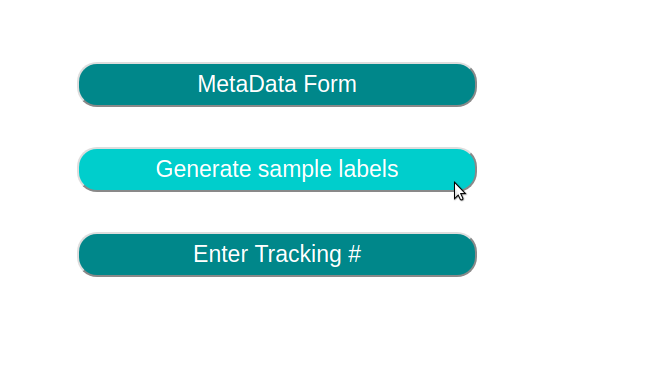
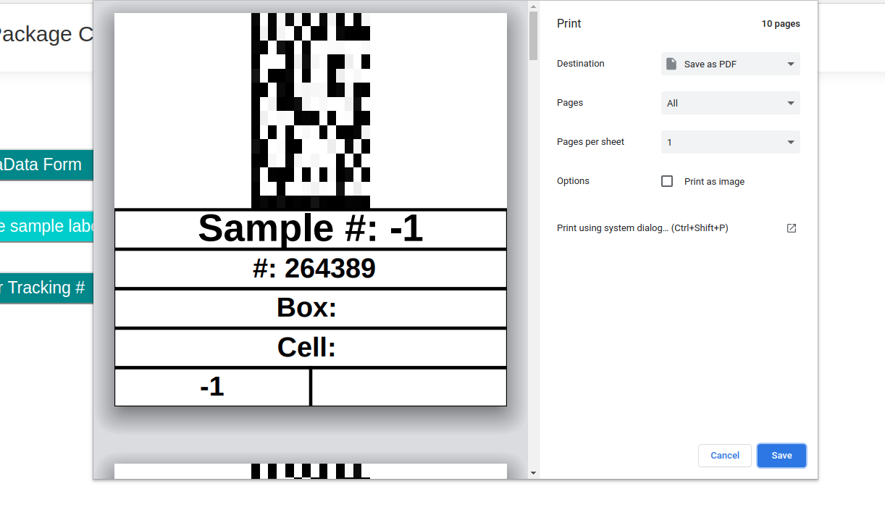

Users can print the QR labels for their sample tubes from the summary page. Reaching the summary page for any package is as simple as clicking on that package on the sidebar.
On the summary page, users can click the "Generate Sample Labels" button to create the labels for their sample tubes.
After clicking the "Generate Sample Labels" button, users are immediatly prompted to print the sample labels. These labels are 1 inch by 1 inch and have the QR code for that samples ID on them. If users forget which samples have which IDs, they can always view the metadata for that package to find out.